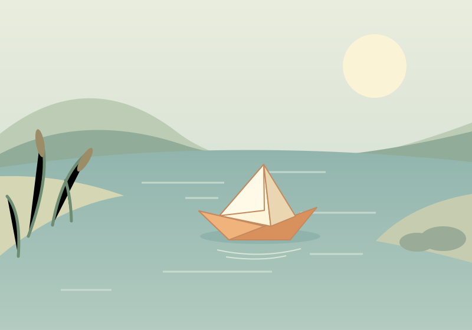
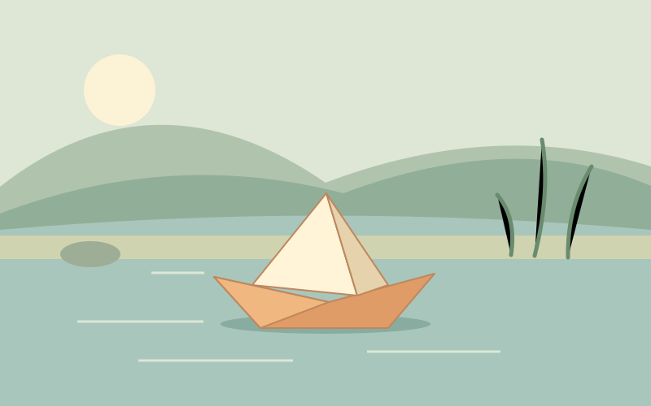
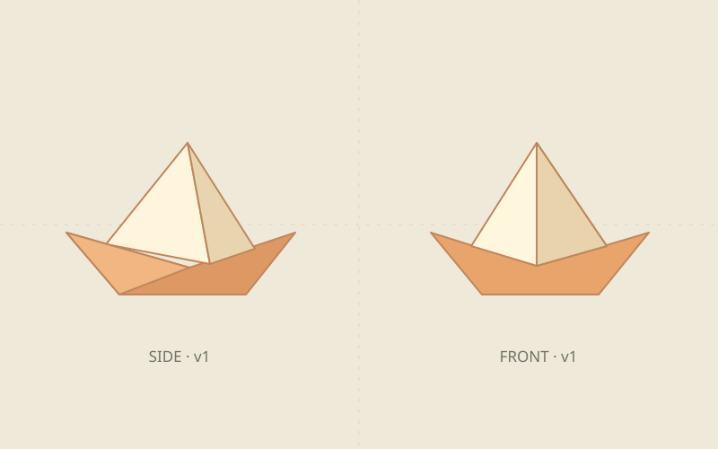

01v1
初稿
Draft · Mock Writer一个安静的早晨，小纸船第一次离开岸边。

01 — STORY DEVELOPMENT
一个安静的早晨，小纸船第一次离开岸边。
02 — SHOT BY SHOT
REFERENCE LIBRARY
版本锁定，而不是指望模型记住一切。
river-bank@1 / wide
原创 SVG 示意
river-bank@1 / side
原创 SVG 示意
paper-boat@1 / front + side
原创 SVG 示意LOCKED REFERENCES
布局：左岸芦苇、右侧圆石；固定道具：橘白纸船；光线：柔和日光。
SHOT-01 → river-bank@1 / wide
SHOT-02 → river-bank@1 / side
CHARACTER → paper-boat@1
这些是演示引用；没有向供应商上传任何附件。SEPARATE BY DESIGN
统一默认，按需覆盖。两层配置各司其职。
所有模块继承默认，也可以单独覆盖。这里只模拟能力校验，不执行模型。
API 选项只切换路由标记，复用网页 fixture，不验证真实协议。OpenAI、Qwen、DeepSeek 与真实生成供应商适配器均未实现。
能力表也是人工 fixture，不表示已验证任何真实模型。已有任务会锁定配置；重置演示后可更改。
OBSERVE. DON'T GUESS.
独立页面解释 → 下一步动作 → 结果绑定。这里全部由本地 fixture 模拟。
这里没有真实浏览器 skill、计时等待、截图或视频文件；刷新只恢复本地记录。
QUALITY & REPAIR · DESIGN PREVIEW
示例问题：纸船边缘的颜色偏离参考。修补只限定船身区域，原片与原音轨保持独立。